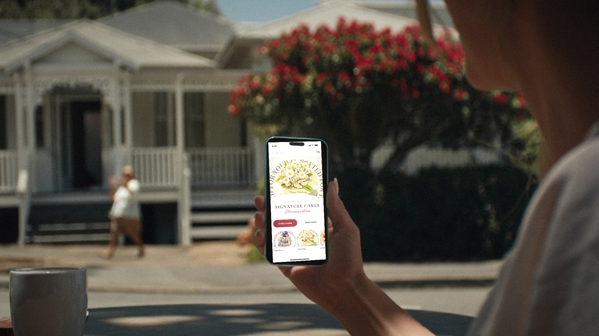
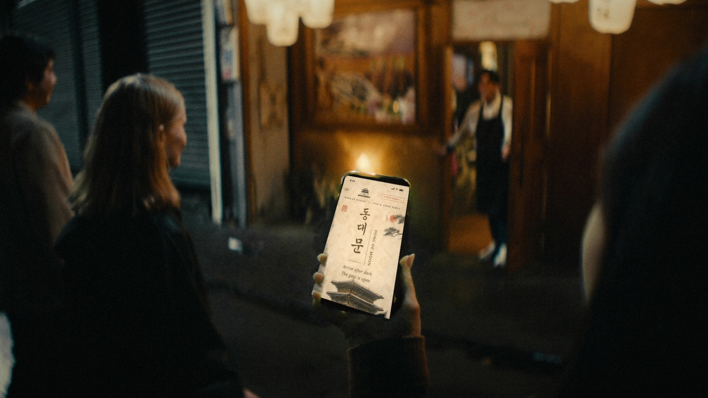
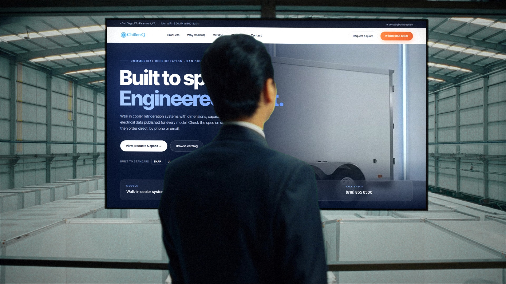
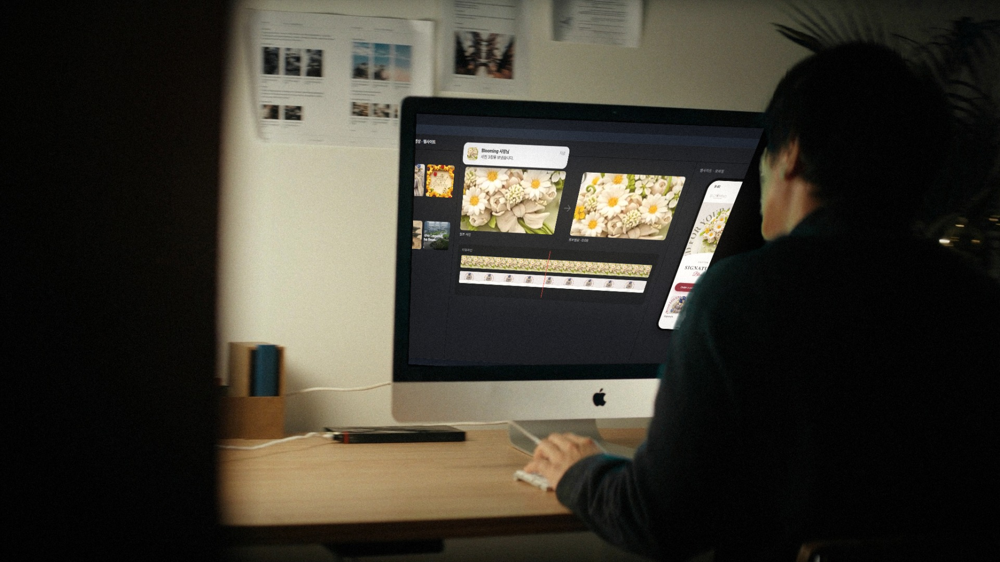

이야기: 사장님이 가진 사진 몇 장 → 고급 AI 홍보영상 → 손님 휴대폰 속 웹사이트 → 실제 손님. 촬영 장면 없음. 약 21초 무한 반복 첫 3초 후킹: 평범한 사진을 보내자마자 그 사진이 움직이는 영상이 됨 — 대표님이 "나도 사진은 있는데?" 하고 자기 일로 느끼는 순간 소리 없이 자연스럽게: 자막 없음 · 이야기는 화면 속 글자(채팅 한 줄, 알림, 사이트)와 손동작(보내기·스크롤·누르기)으로 · 컷은 동작 중에 넘기고, 모양이 같은 것끼리 이어 붙임(사진→영상→사이트, 알림→첫 컷) · 핵심 문구(웹사이트·홍보영상 제작, 관리비 0원, 상담 버튼)는 영상 위 고정 제목에
0:00–0:02.5
컷 1 케이크 가게 · 아침사장님이 케이크 사진 3장을 채팅으로 보내고 "보내기"를 톡 누름. 화면 속 채팅 한 줄이 이야기를 대신함
0:02.5–0:05
컷 2 화면 인서트보낸 사진이 휴대폰 밖으로 커지며 화면을 꽉 채우고 → 그 정지 사진이 움직이기 시작(빛이 지나가고 초점이 이동) = AI 홍보영상

0:05–0:08
컷 3 폰손비 카페 · 현지 손님 iPhone매치컷: 방금 움직이던 케이크가 Blooming 모바일 사이트 첫 화면에서 재생. 엄지로 스크롤 → "Order a cake"

0:08–0:11
컷 4 오클랜드 시내 밤 · 한식 주점 앞현지 친구들이 휴대폰으로 동대문을 보고 고개를 들면, 한국인 사장님이 문을 열어 맞음

0:11–0:14
컷 5 대형 창고 회의실ChillenQ 사이트가 큰 화면에 — 천천히 다가가는 카메라로 규모감
0:14–0:17
컷 6 시내 유학원 · 스카이타워 창밖상담사가 MacBook을 돌려 한국인 가족에게 K-VIBE를 보여주고, 가족이 화면 쪽으로 몸을 기울임

0:17–0:21
컷 7 PAUSE 작업실 · 밤화면: 받은 사진 → 영상 → 모바일 사이트. 새 알림 "Blooming 사장님 · 사진 3장을 보냈습니다"가 뜨는 순간 컷 1로 → 끝없이 반복
 0:00–0:02.5
0:00–0:02.5

 0:14–0:17
0:14–0:17